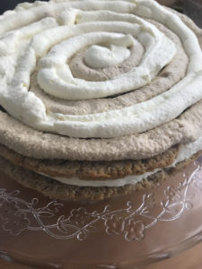

<?xml version="1.0" encoding="UTF-8"?><rss version="2.0"
	xmlns:content="http://purl.org/rss/1.0/modules/content/"
	xmlns:wfw="http://wellformedweb.org/CommentAPI/"
	xmlns:dc="http://purl.org/dc/elements/1.1/"
	xmlns:atom="http://www.w3.org/2005/Atom"
	xmlns:sy="http://purl.org/rss/1.0/modules/syndication/"
	xmlns:slash="http://purl.org/rss/1.0/modules/slash/"
	>

<channel>
	<title>Cake &#8211; Levia Wegner</title>
	<atom:link href="" rel="self" type="application/rss+xml" />
	<link>../../../index.html</link>
	<description>Baking &#38; Happiness</description>
	<lastBuildDate>Wed, 07 Feb 2024 18:58:49 +0000</lastBuildDate>
	<language>en-US</language>
	<sy:updatePeriod>
	hourly	</sy:updatePeriod>
	<sy:updateFrequency>
	1	</sy:updateFrequency>
	<generator>https://wordpress.org/?v=6.8.2</generator>

<image>
	<url>../../../wp-content/uploads/2021/06/Levia-L2-150x150.png</url>
	<title>Cake &#8211; Levia Wegner</title>
	<link>../../../index.html</link>
	<width>32</width>
	<height>32</height>
</image> 
	<item>
		<title>Carrot Cake</title>
		<link>../../../carrot-cake/index.html</link>
		
		<dc:creator><![CDATA[Levia Lydia Wegner]]></dc:creator>
		<pubDate>Sun, 26 Sep 2021 12:14:48 +0000</pubDate>
				<category><![CDATA[Baking Powder]]></category>
		<category><![CDATA[Cake]]></category>
		<category><![CDATA[Decoration]]></category>
		<category><![CDATA[Sweetness]]></category>
		<category><![CDATA[Asia]]></category>
		<category><![CDATA[Persia]]></category>
		<category><![CDATA[Sweet]]></category>
		<guid isPermaLink="false">https://www.leviawegner.com/?p=1196</guid>

					<description><![CDATA[Autumn, harvest, fall. Whatever you call it, it means apples, cinnamon, carrots and other distinct flavours. What better way to celebrate this season than a carrot cake?]]></description>
										<content:encoded><![CDATA[<p>Carrot cake as we know it today is believed to be from <strong>Persia</strong>, however using carrots in a cake was no unusual practice. Around the 15th century, sugar was scarce and expensive. Not many people could afford to buy and much less use large amounts of sugar. That is when carrots came in. The roots have a sweetness to them that could replace the sugar in the cake. Of course, nowadays we don&#8217;t have to rely on the sweetness of the root, but it still adds a nice flavour to the cake.</p>
<h2>Ingredients</h2>
<p>Cake base:</p>
<ul>
<li>400g Carrots</li>
<li>85g Crunchy Almonds</li>
<li>100g Flaked Almonds</li>
<li>200g Flour</li>
<li>1tsp Baking Powder</li>
<li>1 pinch Salt</li>
<li>4 Eggs</li>
<li>250g Sugar</li>
<li>100ml Sunflower Oil</li>
<li>5Tbsp Orange Juice</li>
<li>Butter for greasing</li>
</ul>
<p>Topping and decoration:</p>
<ul>
<li>200g Powdered Sugar</li>
<li>5 Tbsp Orange Juice</li>
<li>60g Fondant</li>
<li>Yellow, Red and Blue Food colouring</li>
</ul>
<h2>Instructions</h2>
<ol>
<li>Wash the carrots, cut their ends and grate them.</li>
<li>Add the almonds to the carrots.</li>
<li>Mix the baking powder and salt into the flour.</li>
<li>Pour the flour into the carrot almond mixture and stir well until the carrots are well coated.</li>
<li>Set the mixture aside and preheat the oven to 160ºC.</li>
<li>Separate the egg yolk from the whites.</li>
<li>Mix the oil, juice and sugar into the egg yolks.</li>
<li>Beat the egg whites until stiff.</li>
<li>Add the egg yolk mixture to the carrots stir well.</li>
<li>Fold in the egg whites.</li>
<li>Pour the batter into a greased cake pan.</li>
<li>Bake the cake for 50-55 minutes or until a toothpick comes out clean.</li>
</ol>
<p>Decoration and Topping</p>
<ol>
<li>While the cake is in the oven, prepare the decoration.</li>
<li>Separate 40g of fondant from the 60g and add yellow and red until obtaining the desired orange colour.</li>
<li>Add blue and yellow to the remaining 20g. Mix well until the fondant is the correct green colour.</li>
<li>Roll out the fondant. Fold the orange one in half.</li>
<li>Cut six pieces off the orange fondant.</li>
<li>Roll out the green fondant and cut thin strips from it.</li>
<li>Cut triangles into the green fondant and roll it up.</li>
<li>Shape the orange fondant into little carrots and cut thin lines into them.</li>
<li>Wet the base of the leaves and the top of the carrots and put them together. (notes)</li>
<li>Take the cake out of the oven and let it cool.</li>
<li>Mix the juice into the powdered sugar until well integrated.</li>
<li>Let the mixture thicken for a bit before pouring it over the cake.</li>
<li>Place the six carrots on the cake distributed evenly.</li>
<li>Serve and enjoy!</li>
</ol>
<h2>Notes</h2>
<p>Fondant: If the fondant gets too sticky when shaping it, wet it with a bit of water and sprinkle some powdered sugar.</p>
]]></content:encoded>
					
		
		
			</item>
		<item>
		<title>Coffee Cake</title>
		<link>../../../coffee-cake/index.html</link>
		
		<dc:creator><![CDATA[Levia Lydia Wegner]]></dc:creator>
		<pubDate>Mon, 30 Aug 2021 13:34:21 +0000</pubDate>
				<category><![CDATA[Baking Powder]]></category>
		<category><![CDATA[Cake]]></category>
		<category><![CDATA[Sweetness]]></category>
		<category><![CDATA[Europe]]></category>
		<category><![CDATA[Italy]]></category>
		<category><![CDATA[Sweet]]></category>
		<guid isPermaLink="false">https://www.leviawegner.com/?p=974</guid>

					<description><![CDATA[If you are looking for a trickier cake, something to really try your hand at baking and decorating, this is the cake for you. It is also extremely delicious and beautiful to look at. So why not give it a go?]]></description>
										<content:encoded><![CDATA[<p>Coffee Cake is believed to first have been made in Germany, however, this one is made with a mascarpone cream, making it attributable to <strong>Italy</strong>. Coffee cake wasn&#8217;t really invented, it was derived from other cakes. Mascarpone is originally from Italy and even got nominated the P.A.T. (Prodotto agroalimentare tradizionale or &#8220;traditional regional food product&#8221;) by the Italian government. This cake is made with a soft biscuit cake base and coffee flavoured mascarpone cream. It tastes similar to Tiramisu but is slightly heavier. It can be enjoyed whenever though it is best served cold so the cream doesn&#8217;t melt.</p>
<h2>Recipe</h2>
<h3>Ingredients</h3>
<p>Biscuit Cake (notes)</p>
<ul>
<li>6 Eggs</li>
<li>100g Flour</li>
<li>120g Cornstarch</li>
<li>200g Sugar</li>
<li>4Tbsp hot Water</li>
<li>1 1/2 Tbsp Instant Coffee</li>
</ul>
<p>For the soaking</p>
<ul>
<li>A cup of cold black coffee (notes)</li>
</ul>
<p>Mascarpone cream</p>
<ul>
<li>500g Mascarpone</li>
<li>800g Heavy cream</li>
<li>4Tbsp Icing Sugar</li>
<li>4tsp Instant Coffee</li>
<li>2Tbsp hot Water</li>
</ul>
<h3>Instructions</h3>
<ol>
<li>Beat the eggs until they have become fluffy.</li>
<li>Sift in the cornstarch, flour and sugar.</li>
<li>Make sure to mix well with an electric mixer to avoid clumps.</li>
<li>Integrate the instant coffee into the hot water before adding it into the batter.</li>
<li>Preheat the oven to 180ºC</li>
<li>But baking paper into a cake form and butter it.</li>
<li>Fill batter into the cake form.</li>
<li>Bake the cake for 30 minutes or until a toothpick stuck in the <strong>middle</strong> comes out clean.</li>
<li>Once the cake is done, take it out of the oven and use a long bread knife to cut it into three layers.</li>
<li>Leave the layers to cool while you prepare the mascarpone cream.</li>
<li>Use an electric mixer to mix the mascarpone and the heavy cream together.</li>
<li>Sift the icing sugar into the cream and mix well.</li>
<li>Separate the cream in two.</li>
<li>Mix the coffee into one of the halves.</li>
<li>Put the cream into the fridge for 30 minutes or until it is solid enough to be piped.</li>
<li>Place the cream into a piping bag with a round nozzle.</li>
<li>Use a baking brush to soak the cake base with the black coffee.</li>
<li>Pipe circles or spirals in both colours on the cake.Cool the cream before decorating the cake.</li>
</ol>
<p></p>
<ol start="19">
<li>Place the creams into piping bags with star nozzles and pipe the decorations.</li>
<li>Pipe the top in circles changing the colours.</li>
<li>For the side, start piping from the bottom and pull the piping bag up without lifting the bag to form the pattern of the white cream in the image below.</li>
</ol>
<p></p>
<ol start="22">
<li>Place the cake in the fridge for several hours or until serving.</li>
</ol>
<h3>Notes</h3>
<p>Biscuit cake: This is a tricky type of cake. It is easy to get something wrong. In fact, I have had huge trouble with it before. Sometimes it is not completely done in the middle. So make sure to do the toothpick trial exactly in the centre and don&#8217;t take the cake out too soon. If you take it out and put it back in too many times, it will collapse and become dry. Make sure the eggs are correctly beaten so you get the right texture. It should be fluffy on the inside.</p>
<p>Coffee: There is a distinct difference in the taste of instant coffee versus a good blend. This coffee&#8217;s main taste is coffee. So it is important to use a good coffee for the soak. Instant coffee is best for cream or the cake itself but I much prefer using coffee made with a coffee machine rather than instant coffee for the soak. It has a stronger more distinct taste to it.</p>
]]></content:encoded>
					
		
		
			</item>
		<item>
		<title>Fig and Bacon cake</title>
		<link>../../../fig-and-bacon-cake/index.html</link>
		
		<dc:creator><![CDATA[Levia Lydia Wegner]]></dc:creator>
		<pubDate>Tue, 10 Aug 2021 19:09:57 +0000</pubDate>
				<category><![CDATA[Baking Powder]]></category>
		<category><![CDATA[Cake]]></category>
		<category><![CDATA[Meat]]></category>
		<category><![CDATA[Savoury]]></category>
		<category><![CDATA[Greece]]></category>
		<category><![CDATA[Yoghurt]]></category>
		<guid isPermaLink="false">https://www.leviawegner.com/?p=869</guid>

					<description><![CDATA[This delicious savoury cake will be perfect to accompany your picnic. Or maybe you can serve a slice for breakfast? Whatever the occasion, this is a truly marvellous snack.]]></description>
										<content:encoded><![CDATA[<p>A friend brought over fresh figs, just as if she had picked it from a tree on the mountainside facing the Mediterranean sea in <strong>Greece</strong>. I didn&#8217;t have to think long about what to do with them, because this recipe had been sitting in the back of my mind for a while. The crispy salty bacon and the texture of the figs form the perfect harmony. One can only imagine how this treat was enjoyed by the philosophers of old. Add a spoonful of greek yoghurt to serve and enjoy!</p>
<p>Figs are commonly known to be of greek origin, however, figs first originated in Asia and only spread through Europe with the Greeks and Romans. Fig trees can live up to 100 years and grow up to fifty feet, although most only grow 10 to 30 feet. Bacon, on the other hand, was used during the 16th century by the English to refer to all pork. The salted pork however, appeared much earlier in China. Both these star ingredients in the following recipe have an old and elaborate history. This recipe is called a cake, not because it is sweet, but because the texture and the batter are that of a cake. It results in an extremely delicious creation. But, don&#8217;t take my word for it, try it yourself!</p>
<h2>Recipe</h2>
<h3>Ingredients</h3>
<ul>
<li>3 Eggs</li>
<li>100ml Sunflower Oil</li>
<li>180g Flour</li>
<li>1 package Baking Powder</li>
<li>20ml Milk</li>
<li>100g Greek Yogurt</li>
<li>200g fresh Figs</li>
<li>100g Bacon</li>
<li>100g Emmentaler, grated</li>
<li>Salt | Pepper | Sugar</li>
</ul>
<h3>Instructions</h3>
<ol>
<li>Put baking paper in a long cake tin and preheat the oven to 180ºC.</li>
<li>Mix the eggs and oil together with an electric mixer until they are fluffy.</li>
<li>Slowly sift in the flour, baking powder and sugar.</li>
<li>Pour in the milk and mix well with an electric mixer to make sure no clumps are left.</li>
<li>Wash the figs and cut them into thin slices.</li>
<li>Cut the bacon into thin strips.</li>
<li>Mix the bacon, figs and cheese into the batter. Add salt and pepper to taste.</li>
<li>Pour the batter into the cake tin and spread it well.</li>
<li>Bake the cake at 160ºC fan for about 45 minutes or until golden-yellow.</li>
<li>Cut into slices and enjoy!</li>
</ol>
<p>&nbsp;</p>
]]></content:encoded>
					
		
		
			</item>
		<item>
		<title>Matcha Cheesecake &#8211; No Bake</title>
		<link>../../../matcha-cheesecake-no-bake/index.html</link>
		
		<dc:creator><![CDATA[Levia Lydia Wegner]]></dc:creator>
		<pubDate>Mon, 09 Aug 2021 13:52:20 +0000</pubDate>
				<category><![CDATA[Cake]]></category>
		<category><![CDATA[Sweetness]]></category>
		<category><![CDATA[Asia]]></category>
		<category><![CDATA[Japan]]></category>
		<category><![CDATA[Sweet]]></category>
		<guid isPermaLink="false">https://www.leviawegner.com/?p=880</guid>

					<description><![CDATA[If you are looking for a fresh and delicious desert that combines Matcha and the well known cheesecake, look no further. This is the recipe for you. And you don't even need to heat up your oven!]]></description>
										<content:encoded><![CDATA[<p>Who doesn&#8217;t think of <strong>Japan</strong> when the typical matcha tea is mentioned? Matcha is a typical Japanese green tea powder. It has a rather bitter flavour and a characteristic green colour. In this recipe, cheesecake, matcha and cookie base are combined to create an amazing culinary exploration. This is a great desert that is not too sweet but full of flavour. It also does not require the use of an oven and is served cold making it a deliciously fresh treat. The thousand and one ways to decorate it make it a real showstopper. If you want to add not only flavour, but also a beautiful hero to your meal, this is the recipe for you.</p>
<h2>Recipe</h2>
<h3>Ingredients</h3>
<p>Base</p>
<ul>
<li>200g Marie Biscuits</li>
<li>100g Butter</li>
</ul>
<p>Green Layer</p>
<ul class="wprm-recipe-ingredients">
<li class="wprm-recipe-ingredient"><span class="wprm-recipe-ingredient-amount">100</span><span class="wprm-recipe-ingredient-unit">ml</span> <span class="wprm-recipe-ingredient-name">Milk</span></li>
<li class="wprm-recipe-ingredient"><span class="wprm-recipe-ingredient-amount">2Tbsp</span><span class="wprm-recipe-ingredient-name"> Matcha Powder (Two packages of 1,5g)</span></li>
<li class="wprm-recipe-ingredient"><span class="wprm-recipe-ingredient-amount">250</span><span class="wprm-recipe-ingredient-unit">g</span> Curd</li>
<li class="wprm-recipe-ingredient">250<span class="wprm-recipe-ingredient-unit">g</span> <span class="wprm-recipe-ingredient-name">Cream Cheese</span></li>
<li class="wprm-recipe-ingredient"><span class="wprm-recipe-ingredient-amount">100</span><span class="wprm-recipe-ingredient-unit">g</span> <span class="wprm-recipe-ingredient-name">Sugar</span></li>
<li class="wprm-recipe-ingredient"><span class="wprm-recipe-ingredient-amount">6</span> leaves Gelatine</li>
</ul>
<p>White Layer</p>
<ul class="wprm-recipe-ingredients">
<li class="wprm-recipe-ingredient"><span class="wprm-recipe-ingredient-amount">100</span><span class="wprm-recipe-ingredient-unit">ml</span> <span class="wprm-recipe-ingredient-name">Milk</span></li>
<li class="wprm-recipe-ingredient"><span class="wprm-recipe-ingredient-amount">250</span><span class="wprm-recipe-ingredient-unit">g</span> Curd</li>
<li class="wprm-recipe-ingredient">250<span class="wprm-recipe-ingredient-unit">g</span> <span class="wprm-recipe-ingredient-name">Cream Cheese</span></li>
<li class="wprm-recipe-ingredient"><span class="wprm-recipe-ingredient-amount">100</span><span class="wprm-recipe-ingredient-unit">g</span> <span class="wprm-recipe-ingredient-name">Sugar</span></li>
<li class="wprm-recipe-ingredient"><span class="wprm-recipe-ingredient-amount">6</span> leaves Gelatine</li>
</ul>
<p>Decoration</p>
<ul>
<li>Lime</li>
<li>Matcha Powder</li>
</ul>
<h3>Instructions</h3>
<ol>
<li>Place the biscuits in a ziplock bag and crush them until you obtain a fine powder.</li>
<li>Melt the butter and mix it into the biscuit powder.</li>
<li>Fill the biscuit mixture into a cake pan and press it down.</li>
<li>Place the base into the fridge for 30 minutes or while you prepare the green layer.</li>
<li>Place the gelatine in cold water while warming the milk.</li>
<li>Whisk the matcha powder into the milk.</li>
<li>Wring out the gelatine and let it dissolve in the milk.</li>
<li>Use an electric mixer to mix the cream cheese until it is soft.</li>
<li>Add in the sugar and curd and mix well until everything is combined.</li>
<li>Pour the milk into the cream cheese mixture and mix it in well with a fork.</li>
<li>Pour the green layer on the base and let cool for 2 hours.</li>
<li>After two hours, prepare the second layer.</li>
<li>Warm the milk and place the gelatine in cold water.</li>
<li>Wriong out the gelatine and mix it wiht the milk.</li>
<li>Mix cream cheese, sugar and curd with an electric mixer before pouring in the milk.</li>
<li>Pour the white layer on top of the green layer and place in the fridge to cool for several hours. (Minimum 2)</li>
<li>Before serving the cake, decorate the top with matcha powder.</li>
<li>Cut limes and place them around the cake as decoration.</li>
</ol>
<h3>Variations</h3>
<p>If you want the top to be decorated with a certain patter, like in the picture, place paper over the places you want to remain white and sift matcha on the rest.</p>
]]></content:encoded>
					
		
		
			</item>
		<item>
		<title>Oreo Cheesecake &#8211; No Bake</title>
		<link>../../../oreo-cheesecake-no-bake/index.html</link>
		
		<dc:creator><![CDATA[Levia Lydia Wegner]]></dc:creator>
		<pubDate>Sun, 01 Aug 2021 16:36:22 +0000</pubDate>
				<category><![CDATA[Cake]]></category>
		<category><![CDATA[Sweetness]]></category>
		<category><![CDATA[Sweet]]></category>
		<guid isPermaLink="false">https://www.leviawegner.com/?p=833</guid>

					<description><![CDATA[This sweet treat combines Oreos with cheesecake and makes it the perfect cake for any occasion. It is served cold and therefore has a fresh taste while, at the same time, having a slightly heavy and overwhelmingly rich and creamy texture due to the cream cheese. Give it a try!]]></description>
										<content:encoded><![CDATA[<p>Oreo cheesecake is a very common cake in the <strong>USA</strong>. Its origins, however, aren&#8217;t entirely clear. Cheesecake goes all the way back to ancient Greece while Oreos where first made in 1912 in Chelsea, Massachusetts. This recipe does not require you to get your oven started and is a very fresh and sweet cake, perfect for your summer party. It is an easy recipe and can be made by anyone, no matter their experience in the kitchen. For this recipe, I prefer using double cream Oreos but any Oreos you prefer will do.</p>
<h2>Recipe</h2>
<h3>Ingredients</h3>
<p>Crust</p>
<ul>
<li>24 Oreos</li>
<li>60g Butter</li>
</ul>
<p>Filling and Decoration</p>
<ul>
<li>450g Cream Cheese</li>
<li>120g Powdered Sugar</li>
<li>480ml Heavy Cream</li>
<li>12 Oreos + Oreos or Mini Oreos for decoration</li>
</ul>
<h3>Instructions</h3>
<ol>
<li>Use a blender to process the Oreos and the butter. Or crumble the Oreos a bit before using a masher to mix them with the butter.</li>
<li>Fill the crust into a round cake pan and spread it with a spoon pushing it into place and smoothing the top.</li>
<li>Leave the crust to cool for about 30 minutes in the fridge while you prepare the filling.</li>
<li>Use an electric mixer to mix the cream cheese until soft.</li>
<li>Sift in the powdered sugar while mixing.</li>
<li>In a different bowl, whisk the heavy cream until stiff peaks form when removing the mixer.</li>
<li>Incorporate the heavy cream into the cream cheese cream.</li>
<li>Chop 12 Oreos and mix them into the cream with a spatula.</li>
<li>Pour the filling on the crust and decorate the cake with Oreos.</li>
<li>Leave the cake to cool for 2 hours in the freazer and 1 hour in the fridge before serving.</li>
<li>Alternatively, leave to cool for 4-5 hours in the fridge.</li>
<li>Serve and enjoy!</li>
</ol>
<h3>Variations</h3>
<p>You can use whatever Oreos you like best for this recipe. You can use strawberry cheesecake Oreos or even vanilla Oreos.</p>
]]></content:encoded>
					
		
		
			</item>
	</channel>
</rss>

<!-- plugin=object-cache-pro client=phpredis metric#hits=722 metric#misses=4 metric#hit-ratio=99.5 metric#bytes=533306 metric#prefetches=68 metric#store-reads=28 metric#store-writes=3 metric#store-hits=85 metric#store-misses=1 metric#sql-queries=4 metric#ms-total=2076.86 metric#ms-cache=115.50 metric#ms-cache-avg=3.8501 metric#ms-cache-ratio=5.6 -->
